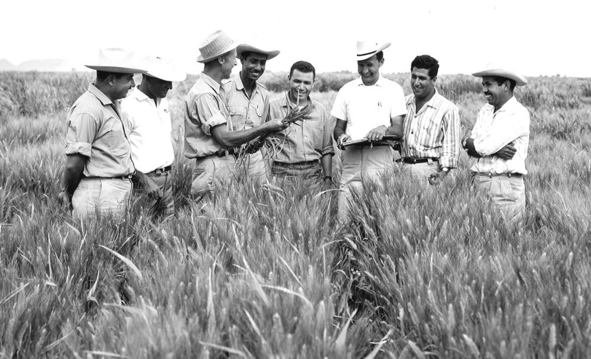

The man who saved a billion lives

Dr.Norman Borlaug,third from the left,trains biologists in mexico on how to increase wheat yields - part of this life-long war on hunger
Here's a time line of Dr.Borlaug's life:
1914 - Born in Cresco,lowa
1933 - Leaves his family's farm to attend the university of Minnesota,thanks to a depression era program known as the "National Youth Administration
1935 - Has to stop school and save up more money.Works in the Civilian Conservation Cops,helping starving Americans,"i saw how food changes them",he said,"All of this scars on
me."
1937 - Finishes university and takes a job in the US Forestry service
1938 - Marries wife of 69 years Margret Gibson.Gets laid off due to budget cuts.Inspired by Elvin Charles Stakman,he return to school study under Stakman,who teaches him about breeding pest-resistant plants.
1941 - Tries to enroll in the military after the Pearl Harbor attack, but is rejected. Instead, the military asked his lab to work on waterproof glue, DDT to control malaria, disinfectants, and other applied science.
1942 - Receives a Ph.D. in Genetics and Plant Pathology
1944 - Rejects a 100% salary increase from Dupont,leaves behind his pregnant wife, and flies to Mexico to head a new plant pathology program.Over the next 16 years, his team breeds 6,000 different strains of disease resistent wheat - including different varieties for each major climate on Earth.
1945 - Discovers a way to grown wheat twice each season, doubling wheat yields
1953 - crosses a short, sturdy dwarf breed of wheat with a high-yeidling American breed, creating a strain that responds well to fertilizer. It goes on to provide 95% of Mexico's wheat.
1962 - Visits Delhi and brings his high-yielding strains of wheat to the Indian subcontinent in time to help mitigate mass starvation due to a rapidly expanding population
1970 - receives the Nobel Peace Prize
1983 - helps seven African countries dramatically increase their maize and sorghum yields
1984 - becomes a distinguished professor at Texas A&M University
2005 - states "we will have to double the world food supply by 2050."Argues that genetically modified crops are the only way we can meet the demand, as we run out of arable land. Says that GM crops are not inherently dangerous because "we've been genetically modifying plants and animals for a long time. Long before we called it science, people were selecting the best breeds."
2009 - 2009-dies at the age of 95.
"Borlaug's life and achievement are testimony to the far-reaching contribution that one man's towering intellect, persistence and
scientific vision can make to human peace and progress." --Indian Prime Minister Manmohan Singh
If you have time, you should read more about this incredible human being on hisWikipedia entry